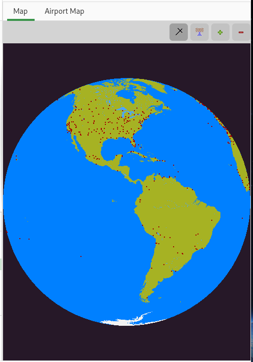

World Map¶
The world map view shows the world globe. It also shows the airports and navaids on the globe. The display of airports and navaids can be turned on or off using the tool bar icons. Hover your mouse over an airport or navaid spot to see its name. When zoomed out only larger airports and VOR navaids are shown. As you zoom in smaller airports are progressively shown along with other navaid types. On a slower computer the map may not be very responsive if both the airports and navaids are being displayed, and you may like to turn them off.
The map view also shows the flight plan you have created.

The map view shows a map of the world as a globe.
You can rotate the globe by clicking on the map using the mouse. The map will then center about the point you selected.
Use the toolbar icons zoom toolbar to zoom in and out on the map.
Toggle the airport and navaid icons to show the position of airports and navigation aids on the map.
The number of airports and navaids shown depends on how far you zoom in on the map. Only the largest airports and VOR type navaides are shown when the map is zoomed out.
You can right click on the map to bring up a short menu from where you can display airports and add airports, navaids and GPS waypoints to the current plan. You can also search for airports or navaids near the current mouse position.